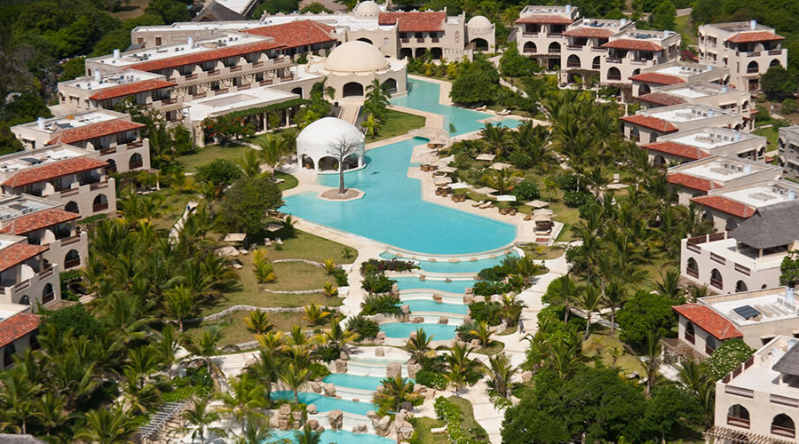

Swahili Beach Resort
Swahili Beach Resort, located on Diani Beach, features a distinctive architecture that blends East Africa Swahili Culture with its parent sources of India and Arabia in one of the most spectacular coastlines in the world, all practically at your doorstep during your aquatic beach travel experiences on the Indian Ocean. The 140 guest rooms are set within gardens of tropical trees, shrubs and plants, giving you a peaceful oasis after your safari or international travel. The moment you step into your room, you are embraced with a neutral color palette accented with jewel tones, natural wood, intricate carvings and magnificent Swahili furnishings.
For a comfy beach trip of South Coast Mombasa with AfricanMecca, you may choose from three room options -- Standard, Superior and Executive Suite, each with adequate amenities, such as shaded private veranda, electronic personal safe, flat screen television, mini bar, air conditioning, coffee/tea maker, wireless internet and en-suite bathroom with rain shower, bidet and dual “his and her” sink vanity. Located in the main building, Standard rooms feature views of the gardens or infinity swimming pool, or you may prefer the ocean views of the Superior Rooms that also have a bathtub.
If you prefer to always have the sand and ocean in view during your coastal beach expedition in East Africa, the spacious Executive Suite offers incredible views, as well as connected lounge, private kitchen and dining veranda, and some of these suites also have access to the rooftop terrace and lounge area.

Swahili Beach Resort, Mombasa, Kenya
©2019 Vacation Spots
Top